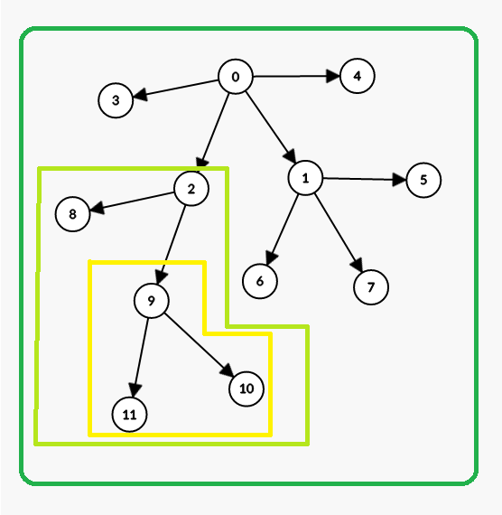
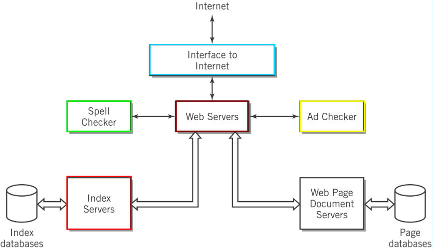
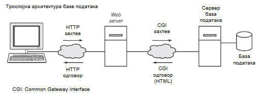

AIKS-Week 2
Pitanja
2.1 Које су најважније идеје, кључне речи и фразе које су наведене у дефиницији система?
Sastoji se od hardverskog i softverskog dela, podataka i komunikacionog dela. Sastoji se od komponenti koje su međusobno povezane. Mogu (ali ne moraju) da imaju namenu (za cilj ostvarivanja rezultata). Mogu se modelovati kao IPO (input-processing-output) s mogućom vezom s nekom “bazom” podataka. Sistem kao i njegove komponente i veze mogu biti konceptualni ili realni (metode, ideje, principi, procesi itd. su generalno konceptualne/nematerijalne komponente)
2.2 Објасните односе између следећих речи: систем, окружење, граница и интерфејс.
Sistem je skup komponenti, međusobno povezanih i organizovanih u celinu. Za razliku od sistema, okruženje je sve što nije sistem, a u čemu on funkcioniše. Granica razdvaja sistem i okruženje, dok se pristup sistemu se vrši preko interfejsa, i može biti međusistem ako je dobro definisan. Okruženje je izvor ulaza i prijemnik izlaza sistema.
2.3 Објасните следећи исказ о системима: „Декомпозиција је суштински хијерархијска“.
Kako je dekompozicija podela (pod)sistema na njegove komponente i veze, ona je inherentno hijerarhijska. Svaki sistem sadrži podsisteme ili nedeljive komponente (ukoliko ima smisla to pominjati*). Tako, sistem se može zamisliti kao neko stablo koje počinje sistemom sa proizvoljnim brojem komponenti koje sačinjavaju svaki čvor (slika ispod**).

Svaka grupa predstavlja neki sistem. * Sumnjam da u kontekstu, recimo,
marketinga, ima smisla deliti čoveka na ćelije ili atome.
* * Odgovor na ovo pitanje sam lično proširio radi jasnoće i detaljnijeg
objašnjenja.
2.4 Објасните шта се подразумева под архитектуром система.
Arhitekturu sistema čine njegove karakteristike i ograničenja, veze između komponenata i veze između njega i okruženja (i matrice povezanosti). Svaka reprezentacija sistema i komponenti se naziva apstrakcija.
2.5 Шта приступ top-down омогућава архитекти система да уради? Шта би био проблем да се тај приступ не користи?
Kako su sistemi često kompolikovani, često se primenjuje top-down prostistup koji omogućava hijerarhijsku dekompoziciju sistema. On omogumćava da se sistem predstavi iz komponenti koje će imati namenu koja je jedino bitna u ovom pristupu, a ne sama njena realizacija. Time se izbacuju suvišni detalji koji nisu relevantni za proučavani deo sistema*.
* Nema smisla projektovati telefon počevši od tranzistora, a čak ni uzimati ga u obzir kada se razmatraju njegove potrebne funkcionalnosti.
2.6 Шта је примарни задатак архитектуре апликације? Наведите пример архитектуре апликације,(свој или неки од примера са предавања). Објасните како су код овог примера испуњени захтеви и ограничења концепта архитектуре апликације.
Arhitekture aplikacije je arhitektura sistema za protok i obrada podataka, a bavi se aktivnostima i obradama podataka aplikativnog softvera. Kao primer posmatrajmo distribuirano preduzeće za maloprodaju (Amazon, recimo). U istom vremenu treba da se vrše nove porudžbine, vodi evidencija o skladištu, da se distribuiraju narudžbine regionalnim objektima, da se vrši pronalazak i organizuje isporuka, prima pordžbina itd. Arhitektura aplikacije bi bila mreža i serveri koji bi čuvali ove informacije, kao i aplikacije koje bi vršile obrade ovih podataka i omogućavale prethodno navedene radnje.
2.7 Већина савремених ИК система у предузећима заснива се на моделу клијент-сервер. Објасните зашто је то случај. Наведите пример клијент-сервер модела који познајете и објасните карактеристике наведеног система које испуњавају концепт клијент-сервер.
Većina IK sistema su zasnovani na modelu client-server je zato što je kod velikih sistema, gde postoji veliki broj korisnika, mnogo lakše kontrolisati podatke i čuvati ih na jednom (ili manjem broju mesta) nego na većem, na svakom računaru. Time se vrši centralizacija i svako može da pristupi kome su potrebni podaci, i da zahteva samo ono što je potrebno. Time se poboljšava bezbednost podataka. Potencijalno se može omogućiti i licencirano korišćenje nekih licenci, zajedničko korišćenje određenih resursa (podataka ili hardvera, štampača, recimo) itd. Ako posmatramo pristup web stranici, nakon uspostavljanja veze, računar klijent šalje zahtev računaru serveru da preuzme web stranicu. Zatim, kada je na samoj stranici, računar može da šalje dodatne upite serveru koji bi dalje vršio obradu podataka. Recimo, na nekom web shopping servisu, nakon pritiskanja “checkout” dugmeta šalje se ponovni zahtev serveru koji obrađuje porudžbinu. Vredi pomenuti da veliki broj ljudi pristupa ovom serveru koji takođe traže da se njihova porudžbina obradi.*
* Ovo je moj lični, mali prošireni primer, doduše HTTP request se pominje u prezentacijama.
2.8 Архитектура система заснована на Web-у је популаран приступ који се примењује у многим организацијама јер нуди бројне предности корисницима и организацији у односу на друге типове система. Које су примарне предности овог приступа?
Prednosti ovakvog pristupa su mogućnost pristupanja određenim uslugama i aplikacijama velikom broju računara preko manjeg broja centralizovanih servera, za razliku od potrebe da na svakom račuanru bude posebno istalirane ili pružene te sluge. Resursi se tako lakše štite i kontrolišu. Čuva se bolja konzistentnost podataka. Takođe, količina podataka koja se čuva je ogromna, i serveri su generalno performantniji, pa centralizovani pristup je značajno bolji* jer čuva na mrežnim resursima kao i potrebi da se vrši unapređivanje krajnjih računara.
* U suprotnom bi morao da se šalje zahtev svakom posebnom računaru zahtev za neki podatak ako ga ima. U slučaju da je broj računara veliki, umesto da se šalje jedan zahtev serveru, slalo si se stotine ili hiljade, što nije praktično. Inače, ovaj odgovor je poprilično sličan prethodnom kako primećujem…
2.9 Која је основна одговорност архитекте система?
Arhitekta sistema razmatra arhitekture mreže, računara, podataka i aplikacije. Zadužen je da organizuje i realizuje sistem koji bi zadovoljio potrebe, uz balansiranje performansi računara i mreže, pogodnosti korisnika i budžeta.
2.10 Многе архитектуре система базирају свој пројекат ИК система на n-слојној архитектури, где је n минимално 2. Објасните разлику између једнослојне архитектуре и n-слојне архитектуре. Које су главне предности n-слојне архитектуре?
Dvoslojna arhitektura je takva da postoji komunikacija klijent-server, gde server obavlja sve potrebne procese kao i skladištenje podataka. S druge strane n-slojna arhitektura je takva da postoje više delova sistema na strani servera koje obavljaju različite poslove i time čine sistem efikasnijim. Troslojna arhitektura* bi, na primer, činila bazu podataka i web server koji bi obavljao potrebno procesiranje i pružao uslugu web aplikacije. Ovim se oslobađaju resursi web servera koji sada ne mora da skladišti podatke. Dakle, prednosti n-slojne arhitekture su bolja ukupna kontrola (jer se svaki deo može pratiti zasebno), i olakšavanje nadogradnje čime se poboljšava skalabilnost.
2.11 У кратким цртама објаснити рачунарство у облаку (cloud computing)? Навести главне предности и ризике за организацију када се разматра коришћење рачунарства у облаку.
Cloud computing je mogućnost korišćenja resursa u cloudu za svoju potrebu, to jest, omogućava skladištenje i obradu podataka na hardveru koji se nalazi negde na cloudu. On omogućava čuvanje backupa za oporavak sistema, lakšu ekspanziju i pristup podacima s bilo kog mesta na internetu (a ne samo s lokacije gde se nalazi hardver). Sistem je stabilniji, olakšava saradnju, i troškovi su smanjeni, kao i početne investicije. Nedostatak je potreba za oslanjanjem na strani hardver što onemogućava kontrolu bezbednosti i slično. Takođe, može doći do gubitka podataka u slučaju promene operativnih procedura usluga u oblaku. Zavisnost klijenta od dugoročne posvećenosti i održivosti usluge u cloudu.
2.12 Дајте кратко објашњење и пример за
- софтвер као услугу (Software as a Service - SaaS),
- платформу као услугу (Platform as a Service - PaaS),
- инфраструктуру као услугу (Infrastructure as a Service - IaaS).
SaaS omogućava korišćenje softverskih aplikacija na cloudu uz potencijalno deljenje obrade podataka (deo na cloudu, deo na klijentu). Primer bi bio Microsoft Office365 ili Google Workspace aplikacije. PaaS omogućava korišćenje čitave platforme koje omogućava razvoj softvera na cloudu bez posedovanja hardvera i posebnog softvera. Cloud pruža usluge API, alata za programiranje, server itd. Primer je AWS Elastic Beanstalk ili Quickbase. IaaS omogućava korišćenje čitavog računara, kao virtuelnu mašinu na cloudu, za potrebe korisnika, koji može da ga modifikuje i konfiguriše kako mu je potrebno. Primeri su Amazon web services - AWS, Google Compute Engine - GCE i Microsoft Azure.
2.13 Размислите о представљању једне радне организације или школе коју познајете.
Идентификујте главне компоненте које описују примарне операције унутар организације и нацртајте дијаграм који представља организацију система. Прикажите и идентификујте везе које повезују различите компоненте. Идентификујте главне факторе спољашње средине који утичу на организацију
Ako posmatramo Google kao primer organizacije, konkretno google.com. Svake sekunde dolaze više desetina hiljada pretraga u toku svake sekunde pa se ti zahtevi negde moraju obraditi na posebnom mestu. S druge strane, podaci koji se treba prikazati (web stranice s rezultatima pretrage) se moraju skladištiti negde (odgovarajuće baze podataka). Same pretrage treba rangirati. Pretrage se vrše prvo u indeks serverima koji u zavisnosti od unetog teksta, izdvajaju odgovarajuće ključne reči i fraze i njima odgovarajuće stranice. Zatim se lista šalje web page document serverima koji vraćaju URL, izdvojeni deo teksta i odgovarajući naziv. Na osnovu pretrage, treba izvršiti proveru ukucanog teksta (spellcheck) takođe se moraju uvrstiti i odgovarajuće reklame koje nudi google (ad check), kako bi sistem bio profitabilan. Sve u svemu, sistem izgleda ovako:

Glavni faktori koji utiču bi bili broj pretraga svake sekunde, kao i broj istovremenih pretraga koje treba paralelno obraditi, potreba da se vrate odgovarajući i relevantni razultati kako klijenti ne bi pretali da koriste, potrebano je smanjiti vreme čekanja i mora se obezbediti integritet podataka.
2.14 Слика илуструје основну архитектуру за трослојни систем базе података. Овај систем се може посматрати као input–processing–output (IPO) систем. Шта је улаз за овај систем? Који елемент спољашње средине генерише улаз (input)? (Напомена: рачунар Web претраживача налази се унутар граница система.) Шта је циљ овог система? Који елемент спољашње средине добија резултат обраде тј. излаз? Укратко опишите обраду која се одвија у овом систему.

Ulaz na sistem je upit(tekst, uopšten korisnički input) koji unosi osoba na krajnjem računaru. Cilj sistema je dohvatanje web stranice. Korisnik nazad dobija rezultat prikazan na browseru na svom računaru (prikazan na monitoru, ili nečem drugom). Korisnik, dakle, unosi neki tekst i traži od browsera da poštalje zahtev za neku stranicu od web servera preko HTTP zahteva. Kada web server dobije zahted, on prosleđuje CGI zahtev bazi podataka da dobije odgovarajuću HTML stranicu i HTTP protokolom prosleđuje nazad klijent računaru.
2.15 Претпоставимо да пројектујете систем продаје заснован на коришћењу Web-а за велику међународну малопродајну фирму. Размотрите основна питања која су специфична за пројектовање вашег Web система, а која морате узети у обзир ако желите да ваш систем буде успешан за привлачење и задржавање купаца.
Kako je firma međunarodna, a maloprodajna, očekujemo veliki broj zahteva od strane korisnika preko web-a za naručivanje ili za pretragu proizvoda koje žele da kupe. Pretraga proizvoda mora da daje listu proizvoda koji odgovaraju zahtevima korisnika, raspoređene po njihivoj želji (popularnosti, relevantnosti, ceni...). Ti su zahtevi često veliki pa očekujemo da će obrada pretraga i pravljenje web stranica biti zahtevna procesorski (jer treba obraditi podatke) i memorijski (jer te podatke negde treba čuvati). Takođe treba uskladiti i održavati ostale sisteme vezane za maloprodaju, skladištenje, vođenje evidencije o skladištu, naručivanje, isporuke, tako da mreže u njima moraju biti efikasne, brze i pouzdane. Isto važi i za primanje zahteva korisnika s interneta. Važno je i razmotriti da li koristiti tuđe ili svoje servere. Bitno je razmotriti kako postići ove rezultate. Bitno je takođe razmotriti i kako postići efikasnu dostavu do raznih delova sveta, kako izvršiti bezbednu naplatu itd.
Dodatna pitanja:
2.1
-- Šta je middleware? --
Middleware je (često hardverski) deo sistema koji omogućava kompatibilnost pri komunikaciji klijent-server. Obično se nalazi na serverskoj strani i omogućava da postoji kompatibilnost aplikacija servera i klijenta. Može da prati sistemske promene, koordiniše i upravlja višestrukim izvršavanjem aplikacija.
2.2
-- Šta je Peer-to-peer (P2P)? Koje su prednosti i mane? --
P2P je alternativa za strukturu client-server koja omogućava ravnopravnu konekciju između dva računara. Računari mogu da dele neke resurse, i da se u isto vreme ponašaji i kao klijenti i kao serveri u nekoj mreži. U početku se koristila za prenos web aplikacija, ali ta upotreba je prevaziđenja zbog manjka bezbednosti. S druge strane, omogućavaju manje opterećenje glavnog servera.